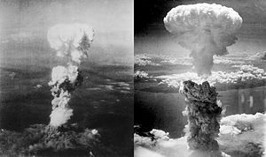
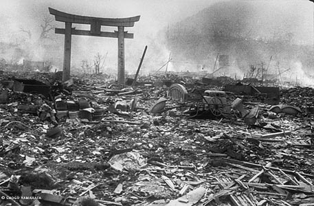

In August 1939, German Scientist Albert Einsten sent a letter to Roosevelt warning him of the nuclear capability that the Germans were close to posessing.
In 1940, the Manhattan Project was already under way.
In 1945, President Truman was faced with a terrible decision.
He had to decide whether or not the United States should use the nuclear bomb on Japan.
Truman decided to issue Japan the Potsdam declaration:
"the Empire of Japan as agreed upon at the Potsdam Conference.
This ultimatum stated that, if Japan did not surrender, it would face "prompt and utter destruction."
The Japanese Emperor decided not to give into Trumans’s demands.
The Little Boy was dropped on the city of Hiroshima on August 6, 1945, followed by the Fat Man over Nagasaki on August 9.
Bans on Nuclear Weaponry were created, but big countries like the U.S., China, and Soviet Russia could still acess these things unfortunately.
- Hiroshima and Nagasaki were utterly destroyed. Over thirty thousand people were
killed at Hiroshima when the bomb was exploded. Over twenty thousand were killed at Nagasaki.
- Tens of thousands or more people were killed from radiation fall out.
- After Nagasaki, Japan issued its’ unconditional surrender to the U.S.
- American made a powerful statement that echoed across the communitty (thinking I have something I could them if I owned them!
A selection of US and Canadian sites important to the Manhattan Project.
A test detonation for the American nuclear weapons
An arch is the only standing after the end of the way (why)?”